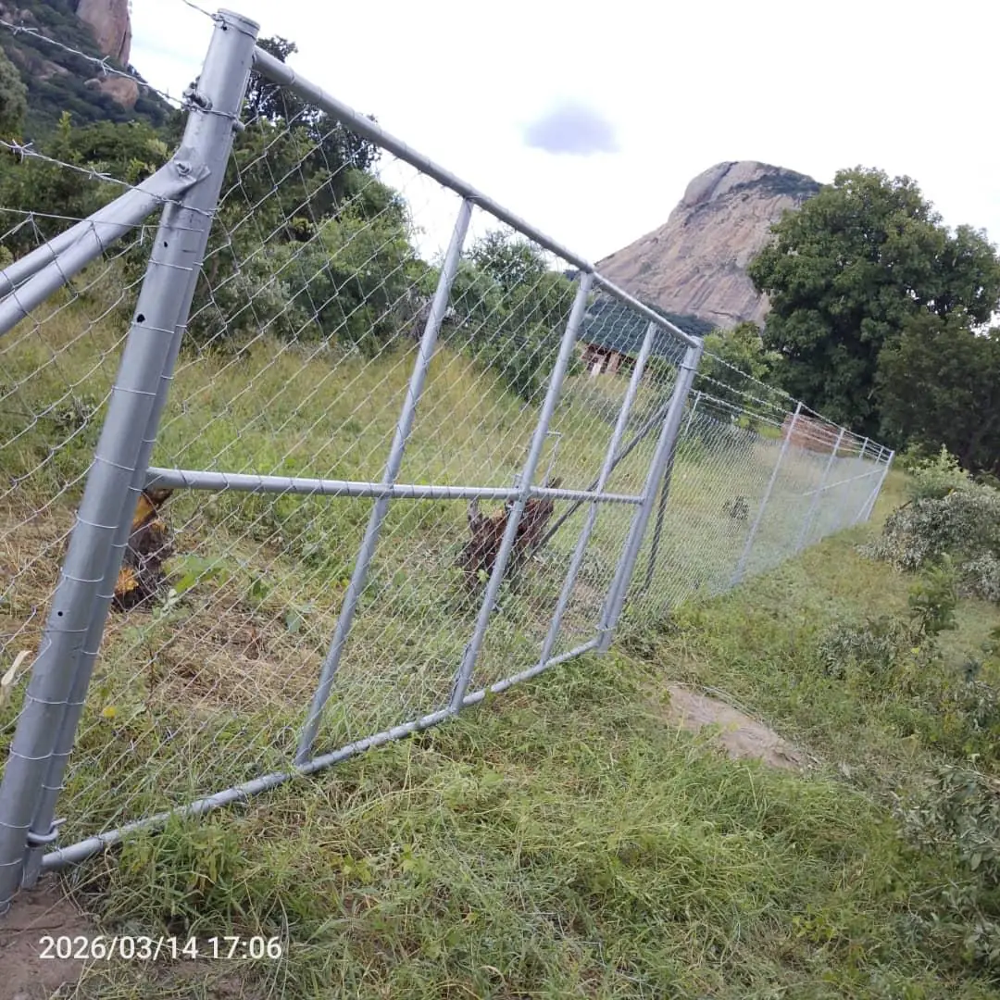

Quick answer
Diamond mesh, also called chain-link, is galvanised wire woven into a diamond pattern and tensioned between posts. It is one of the most economical ways to fence a long boundary, it follows slopes well, and it can be upgraded with barbed wire, razor wire or electric strands. Choose the height for your security needs, use strong braced corner posts, and plan matching gates. Azzar manufactures diamond mesh rolls at its yard in Harare.
How diamond mesh is made
Galvanised wire is woven into a continuous diamond pattern and supplied in rolls. On site, the mesh is stretched between posts and held tight by line wires at the top, middle and bottom. Because it is woven rather than welded, it flexes and follows the ground, which makes it ideal for long or uneven boundaries.
Azzar makes diamond mesh rolls at its yard in Graniteside, Harare, so supply is easier to plan and gates can be fabricated to match.
Where diamond mesh works best
- Homes and gardens: an affordable, see-through boundary.
- Farms: homesteads, kraals, yards, gardens and smaller paddocks.
- Schools and sports grounds: playing fields, courts and enclosures.
- Commercial and industrial sites: side and rear boundaries, yards and storage areas.
- Open land: marking and protecting stands and plots.

Choosing the height
Diamond mesh is made in a range of heights. As a guide:
| Height | Typical use |
|---|---|
| Lower fences | Gardens, play areas, internal divisions and small livestock pens |
| Medium fences | Residential boundaries, school grounds, farm yards |
| Tall fences | Commercial and industrial perimeters, sports enclosures and security boundaries |
For security, height matters less than what is on top. A medium fence with barbed or razor wire above is harder to cross than a tall fence with nothing on it. Tell us what you are protecting and we will recommend a height.
Posts and tension
A diamond mesh fence is only as good as its tension. A slack fence is easy to lift and climb.
- Corner, end and gate posts carry the pull of the whole line and must be braced.
- Line posts hold the fence upright between corners.
- Line wires at the top, middle and bottom keep the mesh tight and stop it being pushed up.
- Concrete footings give posts a firm hold, especially in soft or wet ground.
Upgrades for more security
| Upgrade | What it adds |
|---|---|
| Barbed wire strands | Makes climbing harder at low cost |
| Razor wire coils | A serious deterrent for depots, stores and high-risk boundaries |
| Electric fence strands | An alarmed, deterrent layer |
| Buried or anchored bottom edge | Stops animals and people pushing underneath |
See razor wire vs barbed wire to choose a topping.
Diamond mesh or clearview?
| Diamond mesh | Clearview | |
|---|---|---|
| Best for | General boundaries, farms, gardens, yards | Schools, businesses and high-security sites |
| Climb resistance | Moderate, improved with a topping | High, thanks to small rigid apertures |
| Appearance | Practical and traditional | Neat, modern panels |
| Uneven ground | Follows slopes well | Needs stepping on steep slopes |
| Budget | Usually more economical | Higher investment |
Many sites combine both: clearview on the street-facing side and diamond mesh on the side and rear boundaries.
Gates
Azzar fabricates single and double-leaf diamond mesh gates to match the fence line, for pedestrians, vehicles and farm equipment. Plan gate positions and widths before the fence goes up.
What affects the cost
- Boundary length in metres.
- Fence height.
- Posts: type, spacing and footings.
- Toppings such as barbed or razor wire.
- Gates: number and size.
- Terrain and access, and supply only or installation.
Send us the approximate length, the height you have in mind, your location and a few photos, and we will quote. See our diamond mesh page.
Get a quote from Azzar
Send us your location, the approximate length, what you want to protect and a few photos. We reply with a recommendation and a no-obligation quote, and arrange a free site assessment if one is needed.